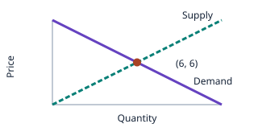
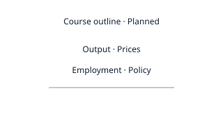

PRE-ALGEBRAIntroductory activities

Pre-Algebra
Signed numbers, fractions, ratios, and expressions.
Start Pre-AlgebraFour introductory lessons; selected foundations, not a complete school course.
YOUR NEXT STEP IN LEARNING
Find your subject, choose a starting point, and explore a few ideas. Use your work and the feedback to decide what to practice next.
Take your report to another AI tutor for more personalized guidance, or keep learning with Cluevera. Use your saved reports to choose what to practice next.
Reports you open and foundation-check answers are saved in this browser when saving is available. Download a copy if you switch browsers or devices. View saved reports →
1 · PICK YOUR SUBJECT
School Mathematics
Further Mathematics
Economics & Decision-Making
2 · TELL US WHAT YOU NEED · OPTIONAL
Tell us what you need, or start with our problems below.
Your request stays in this browser. Copy it and paste it into your AI tutor, or continue with Cluevera’s lessons and checks.
3 · TRY OUR PROBLEMS
No learning request is needed. Each open course has its own activities and progress. Macroeconomics currently offers a planned outline.
Four separate courses. Choose the class you are taking.
Signed numbers, fractions, ratios, and expressions.
Start Pre-AlgebraFour introductory lessons; selected foundations, not a complete school course.

Equations, linear functions, systems, and quadratic roots.
Start Algebra IFour introductory lessons. Continue with the original visual algebra activities for more practice.

Angles, triangle relationships, similarity, and measurement.
Start GeometryFour introductory lessons. Formal proof, circles, and transformations come later.

Polynomial factors, rational restrictions, exponentials, and logarithms.
Start Algebra IIFour introductory lessons. A full function-analysis course comes later.
Connect functions, change, data, and linear transformations.

Connect function rules to graphs, angles, and growth.
Start Pre-calculus Check foundations · 15 questions →Selected introductory activities and a separate foundation check.

Explore limits, tangent slopes, and accumulation through Visual Calculus.
Start Calculus Check foundations · 15 questions →Visual Calculus is open. AP Calculus AB and BC are planned course routes.

Read distributions, compare summaries, and examine study design.
Start Statistics Check foundations · 15 questions →Statistics foundations are open. AP Statistics is planned.

Connect vectors and matrices with geometric transformations.
Start Linear Algebra Check foundations · 15 questions →Selected two-dimensional vector and matrix activities.
Explore markets and choices that depend on other people.

Opportunity cost, supply and demand, elasticity, and marginal choices.
Start MicroeconomicsFour introductory lessons using simplified models. Continue to Game Theory for strategic choices.

A future course about output, inflation, unemployment, and policy models.
View course outlineCourse outline only. Lessons and practice are not open yet.

Read payoffs, compare best responses, and test equilibrium.
Start Game Theory Check foundations · 15 questions →An independent course with applications in economics, mathematics, and computer science.
Ten open introductory courses · One planned course outline. These activities do not cover a complete school or university curriculum.
You can start with any course. This choice does not assign you a level.